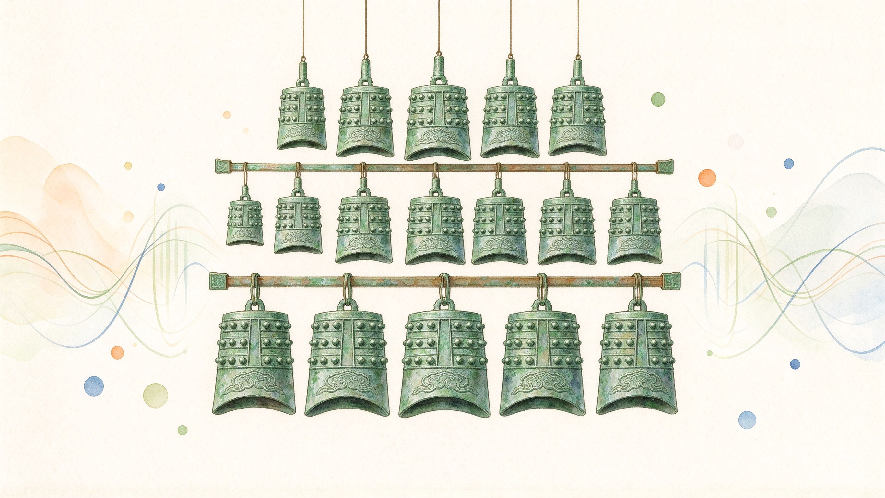
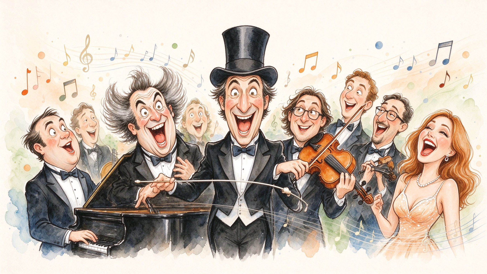
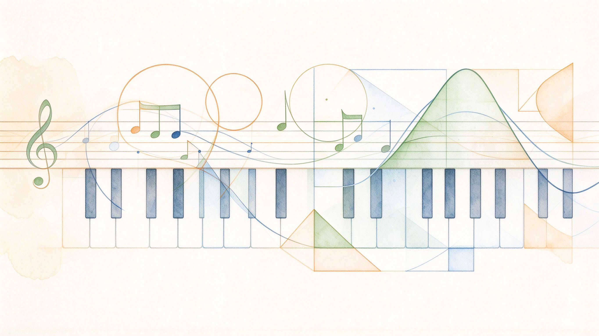
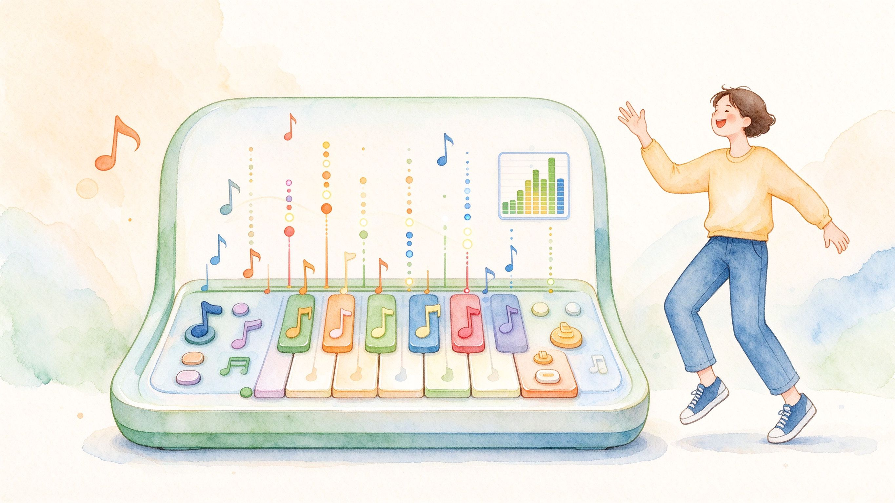
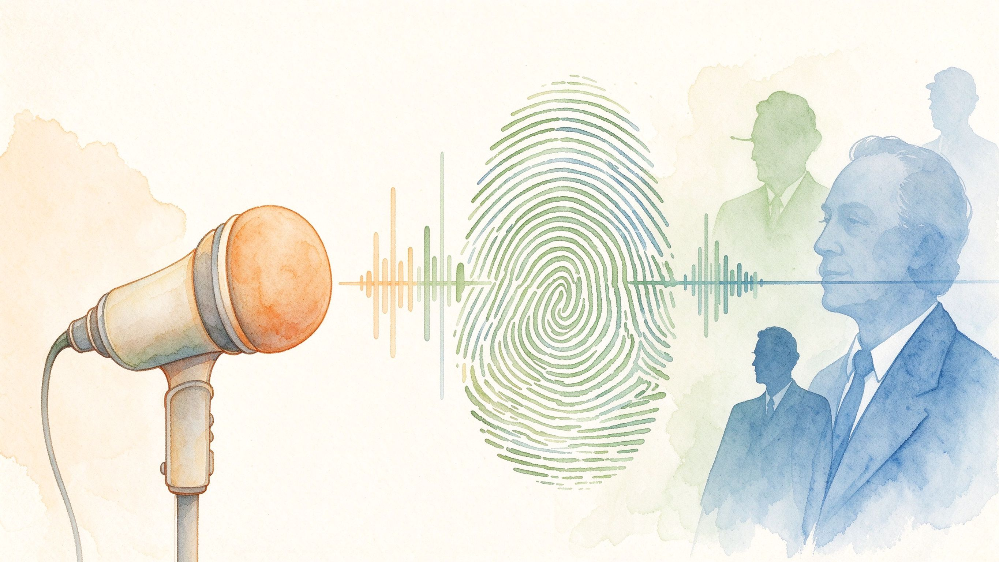

01古樂器
STOP 01
曾侯乙編鐘
聽兩千五百年前的禮樂之聲走進戰國時期的曾侯乙編鐘虛擬體驗：認識這套世界矚目的古樂重器，聽它的音階、敲它的節奏，感受青銅與音律交織的華夏之聲。
開啟主題站
audizoo · 旗艦 01
不講樂理、不求天分，從你最有感覺的入口開始：動手玩、眼睛看、耳朵找。
從節奏遊戲、指法矯正到遠距合奏，把音樂變成可以敲、可以點、可以合奏的互動現場。
和聲視覺化、聲波插畫與古老樂譜翻譯，把抽象的音符變成看得見的形狀與顏色。
用音訊特徵辨識作曲家、AI 配樂與音效製作，聽一段聲音，找到它的來源與故事。
從兩千五百年前的古樂聲，一路走到用聲紋辨識作曲家——每一站都是上一站的延伸，串成一條完整的音樂探險路線。

01古樂器走進戰國時期的曾侯乙編鐘虛擬體驗：認識這套世界矚目的古樂重器，聽它的音階、敲它的節奏，感受青銅與音律交織的華夏之聲。

02人物軼事指揮、鋼琴、小提琴與歌手的歡樂水彩群像，帶你一窺音樂家們的怪誕日常與軼事，原來偉大的創作常誕生於小小的怪癖。

03跨領域在互動實驗室裡，把五線譜上的音符拆成圓周、三角與螺旋，看琴鍵如何排成數學序列——原來音樂與數學本是一家。

04節奏遊戲集結 20 款節奏與音樂主題遊戲，從拍點對對碰到達人挑戰，邊玩邊長出節奏感，不知不覺就學會了音樂的骨架。

05聲紋辨識一支麥克風、一段聲紋，就像指紋一樣。用音訊特徵辨識作曲家，把耳朵當成偵探，在旋律裡找出創作者的簽名。
除了這些旗艦站，audizoo 還收齊 多座音樂主題網站，分四類：創作製作、學習互動、知識資料庫、音樂家歌劇等未來常常給你音樂上的驚喜。
audizoo 聲音動物園，是一個把所有「跟音樂有關」的互動網站收在一起、重新編排的地方。我們相信音樂不該只能被欣賞，更應該能被玩、被看、被找、被懂。
從兩千五百年前的曾侯乙編鐘，到用 AI 辨識作曲家；從幾何化的音符，到 20 款節奏遊戲——每一站都是獨立的實驗室，串起來就是一條完整的音樂探索路線。
不必懂樂理、不需要天分，選一個你有感覺的入口，就能開始。
audizoo 持續擴張中。如果你有想玩的音樂題目、想收錄的主題網站，或想做一份專屬的聲音體驗，直接透過上面任一管道聯絡我們。每一座站的加入，都會成為這條音樂旅程的新一站。